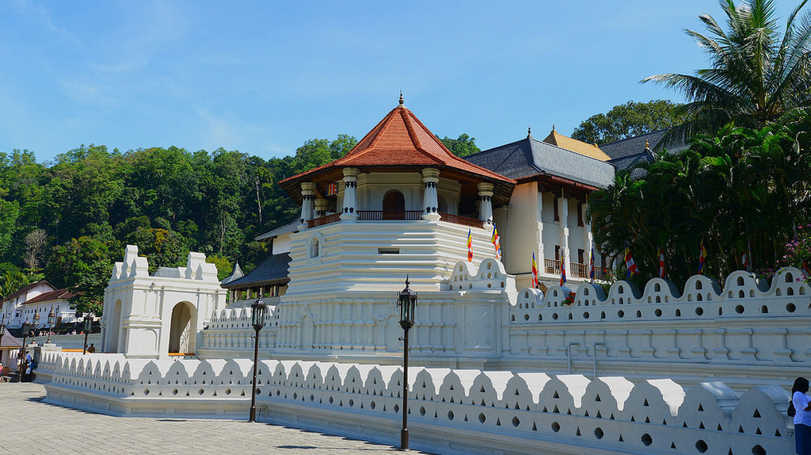
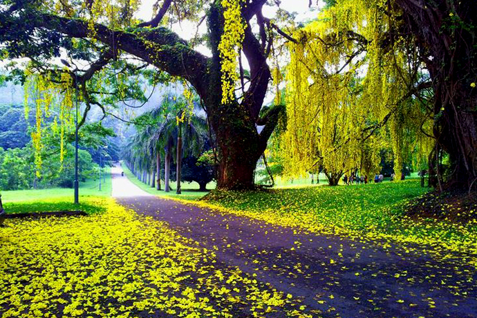
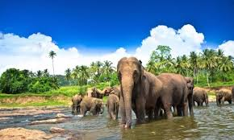
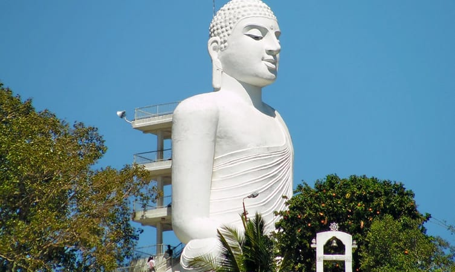
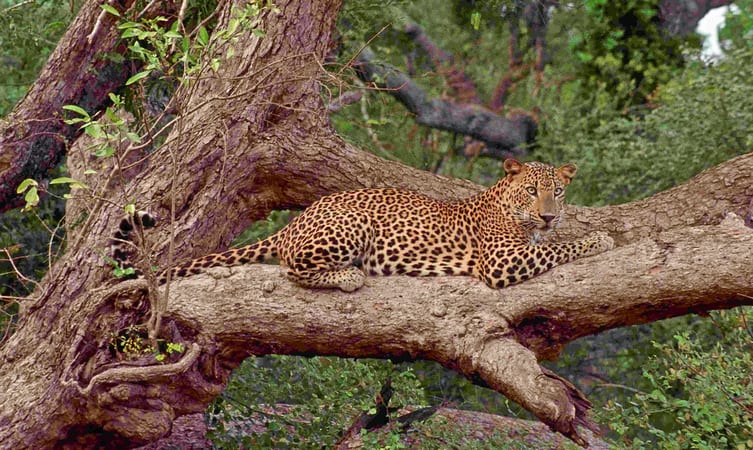

Kandy

Sri Dalada Maligawa or the Temple of the Sacred Tooth Relic is a Buddhist temple in the city of Kandy, Sri Lanka. It is located in the royal
palace complex of the former Kingdom of Kandy, which houses the relic of the tooth of the Buddha.

Royal Botanic Gardens, Peradeniya are about 5.5 km to the west of the city of Kandy in the Central Province of Sri Lanka.
It attracts 2 million visitors annually. It is near the Mahaweli River. It is renowned for its collection of orchids.
 The Ceylon Tea Museum is located in the former Hanthana Tea Factory, which was originally constructed in 1925.
It is situated 3 km south of Kandy. Hanthana was one of the first successful areas to cultivate tea following the failure of coffee production on the island.
The Ceylon Tea Museum is located in the former Hanthana Tea Factory, which was originally constructed in 1925.
It is situated 3 km south of Kandy. Hanthana was one of the first successful areas to cultivate tea following the failure of coffee production on the island.

Millennium Elephant Foundation is an organization and charity set up to rescue and care for captive Asian elephants in Sri Lanka. The foundation is situated on a 15
acre estate by the name of Samaragiri, which is located 10 km northwest of Kegalle, within the Sabaragamuwa Province of Sri Lanka.

This place showcases a breathtaking view of the entire Kandy town. The 88ft high statue of Buddha is something one should not miss while in Kandy. The white statue can be seen from any part of the Peradeniya city as it is strategically located on top of the Bahirava Kanda (devil’s) hill.
You can either climb the steps to reach the viewpoint or else hire a tuk-tuk to do so. The beauty of the statue doubles during the night when it is lit by lamps. Best hour to visit this place is early morning or after sunset. This place should be definitely there on your list of places to visit in Sri Lanka.

The Udawattekele Sanctuary, also known as Royal Park Palace is located at the hilly terrains of the Temple of Tooth Relic. The sanctuary scatters around 257 acres and is deemed as the most important Bio Reserve of the country.
The sanctuary, centuries back was a kingdom named Kandyan and jungle area on the far side of the palace was known as the Uda Wasala Watta or the upper palace garden; hence the name
|